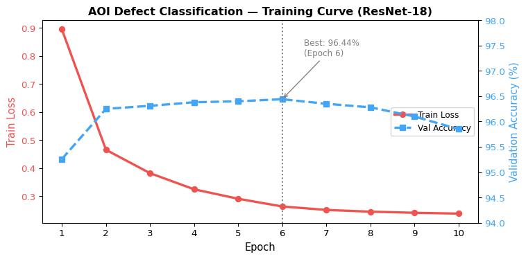
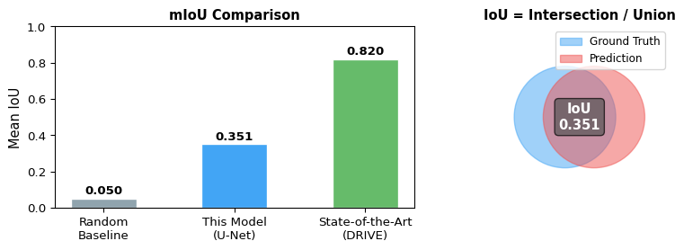
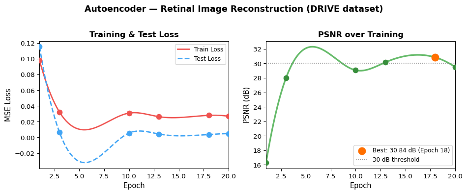
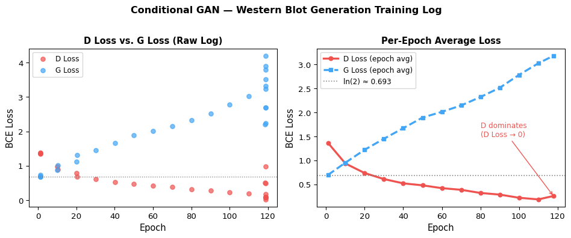

flowchart LR
A["ImageNet\nPretrained\nResNet-18"] --> B["Freeze All\nParameters\n(no grad)"]
B --> C["Replace fc\nLayer → 6 classes"]
C --> D["Train\nClassifier Only\nAdam lr=0.001"]
D --> E["6-Class\nDefect\nPrediction"]
style A fill:#e3f2fd,stroke:#2196F3
style B fill:#f5f5f5,stroke:#9E9E9E
style C fill:#fff3e0,stroke:#FF9800
style E fill:#e8f8e8,stroke:#4CAF50
Deep Learning
Assignments / 作業
Assignment 1 — AOI Defect Classification / 自動光學檢測缺陷分類
Task / 任務： Classify industrial component images into 6 defect categories using a fine-tuned ResNet-18, trained on the AOI (Automated Optical Inspection) dataset. 使用 ResNet-18 對工業元件影像進行 6 類缺陷分類（AOI 自動光學檢測資料集）。
Dataset / 資料集： AOI Dataset — 2,530 training images, 10,144 test images, 6 classes (normal, void, horizontal defect, vertical defect, edge defect, particle)
Method / 方法： ResNet-18 (ImageNet pretrained) — frozen backbone, fine-tuned classifier head
Transfer Learning Strategy / 遷移學習策略
Model Setup / 模型設定
model = models.resnet18(pretrained=True)
# Freeze all parameters
for param in model.parameters():
param.requires_grad = False
# Replace final layer for 6-class output
num_ftrs = model.fc.in_features
model.fc = nn.Linear(num_ftrs, 6)
device = torch.device('cuda' if torch.cuda.is_available() else 'cpu')
model = model.to(device)Training Setup / 訓練設定
criterion = nn.CrossEntropyLoss()
optimizer = optim.Adam(model.fc.parameters(), lr=0.001)
num_epochs = 10
batch_size = 32
# Input: 224×224 RGB, normalized to ImageNet mean/stdResults / 結果
| Epoch | Train Loss | Val Accuracy |
|---|---|---|
| 1 | 0.8943 | 95.26% |
| 2 | 0.4654 | 96.25% |
| 6 | 0.2635 | 96.44% |
| 10 | 0.2381 | 95.85% |
Best Validation Accuracy: 96.44%

Assignment 2 — Retinal Vessel Segmentation / 視網膜血管分割
Task / 任務： Perform binary semantic segmentation of blood vessels in retinal fundus images using a custom U-Net architecture trained on the DRIVE dataset. 使用自製 U-Net 對 DRIVE 資料集的眼底影像進行視網膜血管二元語意分割。
Dataset / 資料集： DRIVE (Digital Retinal Images for Vessel Extraction) — 22 training, 20 test images, 512×512
Method / 方法： U-Net (5-level encoder-decoder with skip connections) + Focal Tversky Loss
Sample Retinal Images from Dataset / 資料集視網膜影像範例


U-Net Architecture / U-Net 模型架構
flowchart TB
subgraph Encoder["Encoder (Contracting Path)"]
direction TB
E1["Conv1\n1ch → 64"] --> P1["MaxPool ↓2"]
P1 --> E2["Conv2\n64 → 128"] --> P2["MaxPool ↓2"]
P2 --> E3["Conv3\n128 → 256"] --> P3["MaxPool ↓2"]
P3 --> E4["Conv4\n256 → 512"] --> P4["MaxPool ↓2"]
P4 --> E5["Bottleneck\n512 → 1024"]
end
subgraph Decoder["Decoder (Expanding Path)"]
direction TB
D1["UpConv\n1024→512\n+ skip E4"] --> C6["Conv6\n1024→512"]
C6 --> D2["UpConv\n512→256\n+ skip E3"] --> C7["Conv7\n512→256"]
C7 --> D3["UpConv\n256→128\n+ skip E2"] --> C8["Conv8\n256→128"]
C8 --> D4["UpConv\n128→64\n+ skip E1"] --> C9["Conv9\n128→64"]
C9 --> OUT["Conv10\n64→1\nSigmoid mask"]
end
E5 --> D1
style E5 fill:#fff3e0,stroke:#FF9800
style OUT fill:#e8f8e8,stroke:#4CAF50
class UNet(torch.nn.Module):
def __init__(self, inchannel, outchannel):
super(UNet, self).__init__()
# Encoder
self.conv1 = Conv(inchannel, 64)
self.conv2 = Conv(64, 128)
self.conv3 = Conv(128, 256)
self.conv4 = Conv(256, 512)
self.conv5 = Conv(512, 1024)
self.pool = torch.nn.MaxPool2d(2)
# Decoder
self.up1 = torch.nn.ConvTranspose2d(1024, 512, 2, 2)
self.conv6 = Conv(1024, 512)
self.up2 = torch.nn.ConvTranspose2d(512, 256, 2, 2)
self.conv7 = Conv(512, 256)
self.up3 = torch.nn.ConvTranspose2d(256, 128, 2, 2)
self.conv8 = Conv(256, 128)
self.up4 = torch.nn.ConvTranspose2d(128, 64, 2, 2)
self.conv9 = Conv(128, 64)
self.conv10 = torch.nn.Conv2d(64, outchannel, 3, 1, 1)Training Setup / 訓練設定
# Focal Tversky Loss — handles class imbalance in vessel vs background
criterion = lambda y_pred, y_true: focal_tversky_loss(
y_pred, y_true, alpha=0.5, beta=0.5, gamma=0.75
)
optimizer = torch.optim.Adam(model.parameters(), lr=0.001)
scheduler = torch.optim.lr_scheduler.ReduceLROnPlateau(
optimizer, mode='min', factor=0.5, patience=5
)
device = torch.device("mps") # Apple Silicon
num_epochs = 100Segmentation Results / 分割結果
Each row shows: Original fundus image → Predicted segmentation mask → Ground truth mask 每列依序為：原始眼底影像 → 預測分割遮罩 → 真實標記遮罩

Quantitative Results / 定量結果
| Metric | Value |
|---|---|
| Mean IoU (mIoU) | 0.3510 |
| Training epochs | 100 |
| Input resolution | 512 × 512 |

Assignment 3 — Retinal Image Reconstruction / 視網膜影像重建
Task / 任務： Train a convolutional autoencoder to reconstruct retinal fundus images in an unsupervised manner, evaluated by Peak Signal-to-Noise Ratio (PSNR). 以無監督方式訓練卷積自動編碼器重建眼底影像，以 PSNR 作為評估指標。
Dataset / 資料集： DRIVE — 21 training, 20 test images, 512×512 RGB
Method / 方法： Convolutional Autoencoder (Encoder-Decoder with skip connections) + MSE Loss
AutoEncoder Architecture / 模型架構
flowchart LR
subgraph Encoder["Encoder"]
IN["Input\n3ch\n512×512"] --> C1["Conv1\n3→64"]
C1 --> P1["Pool ↓2"] --> C2["Conv2\n64→128"]
C2 --> P2["Pool ↓2"] --> C3["Conv3\n128→256"]
C3 --> P3["Pool ↓2"] --> C4["Conv4\n256→512"]
end
subgraph Decoder["Decoder"]
U1["UpConv\n512→256\n+skip C3"] --> D1["Conv5\n512→256"]
D1 --> U2["UpConv\n256→128\n+skip C2"] --> D2["Conv6\n256→128"]
D2 --> U3["UpConv\n128→64\n+skip C1"] --> D3["Conv7\n128→64"]
D3 --> OUT["Conv8\n64→3\nReconstruction"]
end
C4 --> U1
style IN fill:#e8f4f8,stroke:#2196F3
style OUT fill:#e8f8e8,stroke:#4CAF50
class AutoEncoder(nn.Module):
def __init__(self, inchannel=3, outchannel=3):
super(AutoEncoder, self).__init__()
# Encoder
self.conv1 = Conv(inchannel, 64)
self.conv2 = Conv(64, 128)
self.conv3 = Conv(128, 256)
self.conv4 = Conv(256, 512)
self.pool = nn.MaxPool2d(2)
# Decoder (with skip connections)
self.up1 = nn.ConvTranspose2d(512, 256, 2, 2)
self.conv5 = Conv(512, 256)
self.up2 = nn.ConvTranspose2d(256, 128, 2, 2)
self.conv6 = Conv(256, 128)
self.up3 = nn.ConvTranspose2d(128, 64, 2, 2)
self.conv7 = Conv(128, 64)
self.conv8 = nn.Conv2d(64, outchannel, 3, 1, 1)Training Setup / 訓練設定
criterion = nn.MSELoss()
optimizer = torch.optim.Adam(model.parameters(), lr=0.001)
num_epochs = 20
batch_size = 1
# Normalization: mean=0.5, std=0.5
device = torch.device("cuda" if torch.cuda.is_available() else "mps")Results / 結果
| Epoch | Train Loss | Test Loss | PSNR (dB) |
|---|---|---|---|
| 1 | 0.0979 | 0.1152 | 16.29 |
| 3 | 0.0323 | 0.0067 | 27.98 |
| 10 | 0.0309 | 0.0055 | 29.06 |
| 13 | 0.0263 | 0.0043 | 30.16 |
| 18 | 0.0280 | 0.0037 | 30.84 |
| 20 | 0.0268 | 0.0048 | 29.50 |
Best PSNR: 30.84 dB at Epoch 18

Assignment 4 — Western Blot Image Generation / Western Blot 影像生成
Task / 任務： Train a conditional GAN to generate Western blot images from two template images, learning the mapping from template patterns to realistic blot patterns. 訓練條件式 GAN，從兩張模板影像生成 Western blot 影像，學習模板圖案到真實條帶紋路的映射。
Dataset / 資料集： Western Blot Dataset — 402 template pairs + 402 target images, 64×64 grayscale
Method / 方法： Conditional GAN — Encoder-Decoder Generator + PatchGAN-style Discriminator
Conditional GAN Training Flow / 條件式 GAN 訓練流程
flowchart TB
T1["Template 1\n(64×64)"] --> CAT["Concatenate\n(2ch input)"]
T2["Template 2\n(64×64)"] --> CAT
CAT --> G["Generator\nEncoder-Decoder\n256→128→64→1"]
G --> FAKE["Generated\nBlot Image"]
REAL["Real Blot\nImage"] --> D
FAKE --> D["Discriminator\nConv layers\n→ Real / Fake"]
D -->|"adversarial loss"| G
D -->|"D loss"| UPDATE_D["Update D\nAdam 0.0002"]
G -->|"G loss"| UPDATE_G["Update G\nAdam 0.0002"]
style G fill:#e3f2fd,stroke:#2196F3
style D fill:#fce4ec,stroke:#E91E63
style FAKE fill:#fff3e0,stroke:#FF9800
style REAL fill:#e8f8e8,stroke:#4CAF50
Generator Architecture / 生成器架構
class TemplateToImageGenerator(nn.Module):
def __init__(self):
super(TemplateToImageGenerator, self).__init__()
self.encoder = nn.Sequential(
nn.Conv2d(1, 64, kernel_size=4, stride=2, padding=1),
nn.BatchNorm2d(64), nn.ReLU(),
nn.Conv2d(64, 128, kernel_size=4, stride=2, padding=1),
nn.BatchNorm2d(128), nn.ReLU(),
nn.Conv2d(128, 256, kernel_size=4, stride=2, padding=1),
nn.BatchNorm2d(256), nn.ReLU(),
)
self.decoder = nn.Sequential(
nn.ConvTranspose2d(256, 128, kernel_size=4, stride=2, padding=1),
nn.BatchNorm2d(128), nn.ReLU(),
nn.ConvTranspose2d(128, 64, kernel_size=4, stride=2, padding=1),
nn.BatchNorm2d(64), nn.ReLU(),
nn.ConvTranspose2d(64, 1, kernel_size=4, stride=2, padding=1),
nn.Tanh(),
)Discriminator Architecture / 判別器架構
class TemplateToImageDiscriminator(nn.Module):
def __init__(self):
super(TemplateToImageDiscriminator, self).__init__()
self.model = nn.Sequential(
nn.Conv2d(2, 64, kernel_size=4, stride=2, padding=1),
nn.LeakyReLU(0.2),
nn.Conv2d(64, 128, kernel_size=4, stride=2, padding=1),
nn.BatchNorm2d(128), nn.LeakyReLU(0.2),
nn.Conv2d(128, 256, kernel_size=4, stride=2, padding=1),
nn.BatchNorm2d(256), nn.LeakyReLU(0.2),
nn.AdaptiveAvgPool2d((1, 1)),
nn.Flatten(),
nn.Linear(256, 1),
nn.Sigmoid()
)Training Setup / 訓練設定
g_optimizer = optim.Adam(generator.parameters(), lr=0.0002)
d_optimizer = optim.Adam(discriminator.parameters(), lr=0.0002)
criterion = nn.BCELoss()
num_epochs = 200 # trained on CPU, stopped at epoch 118
batch_size = 1Results / 結果
Training ran on CPU and was recorded up to epoch 118/200. By that point the Discriminator had begun to dominate (D Loss < 0.1 in some steps), causing G Loss to climb — a classic sign the generator needs more capacity or learning rate balancing. 訓練在 CPU 上進行，記錄至第 118 個 epoch。此時判別器開始主導訓練（D Loss 低至 0.03），導致 G Loss 攀升，為典型的判別器過強問題。
| Epoch | D Loss (sample) | G Loss (sample) |
|---|---|---|
| 1 / step 10 | 1.3715 | 0.7412 |
| 1 / step 40 | 1.3699 | 0.6840 |
| 118 / step 200 | 0.4921 | 2.2424 |
| 118 / step 230 | 0.0263 | 4.2039 |
| 118 / step 270 | 0.0683 | 3.5220 |
